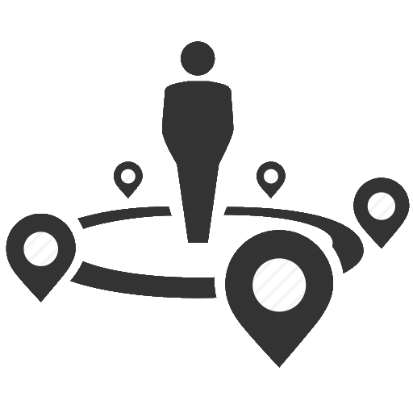

<ion-header>
  <ion-toolbar color="gray">
    <ion-searchbar type="search" animated="true"
                   placeholder="Let's find what you want!"
                   [(ngModel)]="userInput"
                   [showCancelButton]="shouldShowCancel"
                   (ionInput)="onInput($event)">>
    </ion-searchbar>
  </ion-toolbar>
</ion-header>

<ion-content>

  <ion-list *ngIf="results != undefined && results.length > 0 && searching == true" style="display: inline !important;">
    <button ion-item *ngFor="let res of results" (click)="calcRoute(res)" style="background-color: white; color: black;">
        <div *ngIf="res[0] === 'friend'">
          
          {{res[1]}} {{res[2]}}
        </div>
        <div *ngIf="res[0] === 'building'">
          
          {{res[1]}}
        </div>
        <div *ngIf="res[0] === 'cafe' && res[1] === 'Tim Hortons'">
          
          {{res[1]}}
        </div>
        <div *ngIf="res[0] === 'cafe' && res[1] === 'Starbucks'">
          
          {{res[1]}}
        </div>
    </button>
  </ion-list>

  <div #map id="map"></div>

  <ion-fab bottom center>
    <button ion-button large (click)="reCenter()" style="background-color: white; width: 30px; height: 30px; margin-left: 15px; margin-bottom: 10px"><ion-icon name="locate" style="color: dodgerblue;border-radius: 25px;"></ion-icon></button>
  </ion-fab>
  <ion-fab bottom center>
    <button ion-button large (click)="reCenter()" style="margin-bottom: -10px; border-radius: 25px; margin-left: -40px; width: 150px; height: 25px; background-color: white; color: black">
      <ion-note>Locate Me</ion-note>
    </button>
  </ion-fab>

  <ion-fab top right *ngIf="searching == false">
  <button ion-fab large color="secondary" (click)="showNearbyPopover($event)"></button>
</ion-fab>

  <ion-fab bottom left>
    <button ion-fab large (click)="goSettings()" style="background-color: darkslategray"><ion-icon name="settings"></ion-icon></button>
  </ion-fab>

  <ion-fab bottom right>
    <button ion-fab large (click)="goFriends()">
      <ion-icon name="people"></ion-icon>
    </button>
  </ion-fab>
  <ion-fab bottom right *ngIf="numberNotifications > 0">
    <ion-badge color="danger">{{ numberNotifications }}</ion-badge>
  </ion-fab>
</ion-content>
